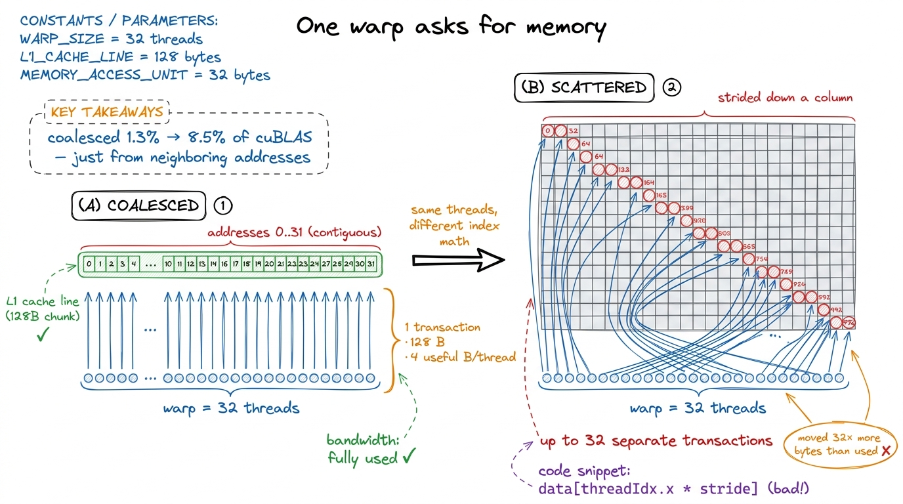
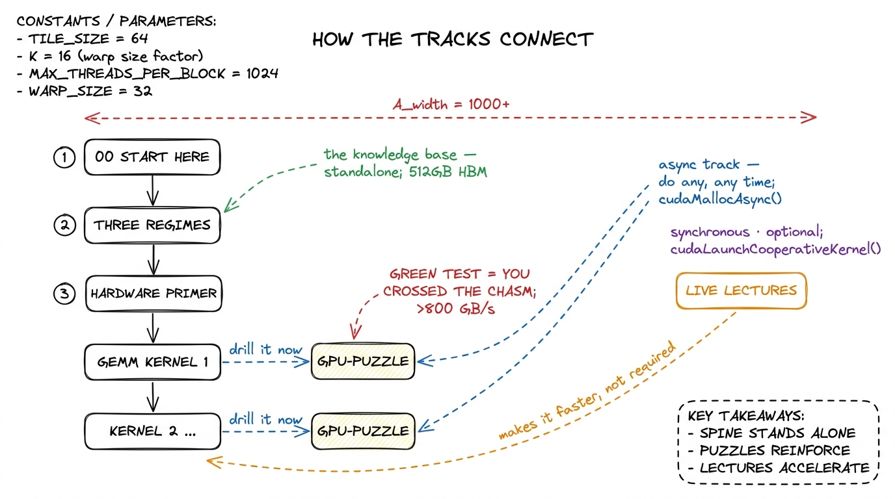
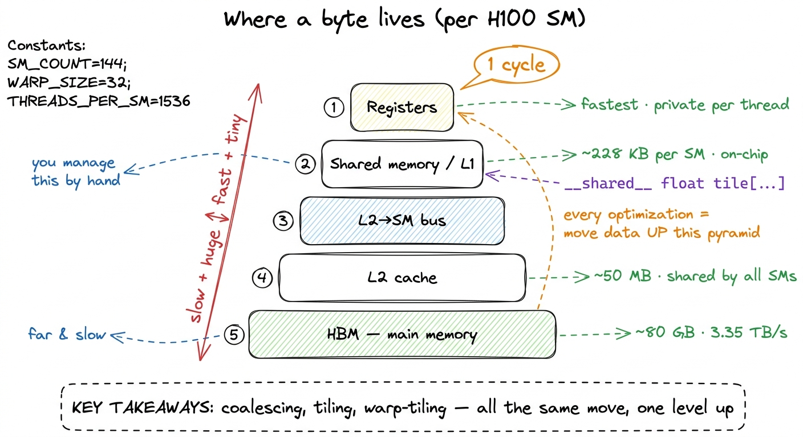

How to use this site
Let me start with the most basic question, the one nobody asks out loud because it sounds too simple: what is this site even for, and why is it shaped the way it is? If you can answer that in one sentence by the time you finish this page, you'll get far more out of everything downstream. So here is the sentence, and then I'll spend the rest of the page earning it: this is a worklog that teaches you to make a GPU go fast by writing the dumbest possible version of a kernel, measuring how slow it is, and then earning every improvement one number at a time.
That's it. That's the whole method. But those words hide a lot, so let's slow down and unpack them from the ground up, because if you're new here I don't want to assume you already know what a "kernel" is, what "fast" means for a GPU, or why measuring first is the entire game.
What is a kernel, and what does "fast" even mean?
Start with the object at the center of everything: a kernel. When people say "GPU kernel" they mean a small program that runs on the graphics card instead of on your CPU, and — this is the part that surprises newcomers — it runs in thousands of copies at once. You write the code for one worker (CUDA calls each worker a thread), the GPU launches tens of thousands of those threads, and they all run the same code on different pieces of data. A kernel is just that piece of code, plus the recipe for how many copies to launch.1 "Kernel" here has nothing to do with the operating-system kernel. It's borrowed from the idea of the small "inner loop" at the heart of a computation. When I say kernel on this site, I always mean a GPU program launched across a grid of threads — a matmul kernel, an attention kernel, a softmax kernel.
Now the second word: fast. This is subtler than it looks, and getting it right is half the battle. A modern GPU like an H100 can do about 990 trillion floating-point operations per second in the number formats deep learning uses (that's 990 TFLOP/s, and I'm being conservative). It can also stream about 3.35 terabytes per second out of its main memory. Those are two completely different taps, and here's the key idea I want you to carry through the entire site: every kernel is limited by one of them at a time. Either you're waiting on the math units, or you're waiting on the memory pipe, or you're waiting on neither and just wasting time on overhead. Naming which one is the whole skill.
So "fast" doesn't mean "used a clever trick." It means: you got close to the limit of whichever tap you're actually bottlenecked on. A kernel that's memory-bound and hitting 95% of memory bandwidth is fast even if the math units sit idle — because there was nothing more to get.
Let me make that concrete with a napkin calculation, because I never want a number to arrive from the sky. Suppose you multiply two 4096×4096 matrices. The math is fixed: multiplying two N×N matrices costs about 2·N³ floating-point operations, so 2 · 4096³ ≈ 137 billion FLOPs. The memory you must touch is three matrices of 4096² floats. In the FP16 format (2 bytes each) that's 3 · 4096² · 2 ≈ 100 MB. Divide the work by each tap: the math takes 137e9 / 990e12 ≈ 0.14 milliseconds, the memory takes 100e6 / 3.35e12 ≈ 0.03 milliseconds. The math tap is slower, so a perfect matmul of this size is compute-bound and can't beat 0.14 ms. If your kernel takes 5 ms, you're at about 2.8% of what the hardware allows — and now you know exactly how much is left on the table.
 figure rendering · The central mental model for the whole site. A kernel is never limited
figure rendering · The central mental model for the whole site. A kernel is never limitedHold onto that picture — the two taps and the bucket under the slower one. It is the single mental model the entire site hangs on, and I'll pull it back out on almost every page. The formal name for the two-tap idea is the roofline model, and there's a whole article on it, but you already understand the core: find the slower tap, get close to it, stop.
Why a worklog, and not a textbook?
Here's the natural objection. If the goal is just "get close to the limit," why not write a textbook that hands you the finished fast kernel and explains it? Why the whole song and dance of writing a slow version first?
Because — and I learned this the hard way — a finished fast kernel teaches you almost nothing. It's a dense knot of a dozen optimizations tangled together, and if you didn't add them one at a time you can't tell which one bought which speedup, or why. Worse, you learn to copy rather than to derive. The next time you face a slightly different problem, the copied kernel doesn't transfer, because you never internalized the reasoning that produced it.
So this site does the opposite. It builds the dumbest version of a thing — one thread computes one output, no cleverness — profiles it, is honestly embarrassed by the number, and then earns each improvement as a small, self-contained argument. Every optimization is a bet: I think we're memory-bound here, so this change should help. Then we measure. If the number moves, the bet was right and now you understand why. If it doesn't move, the bet was wrong — and being wrong, in front of a profiler, is the single most valuable thing that happens on any page, because it means the profiler just found a cost you couldn't see.
Nothing here is a lecture that hands you the answer. It's a worklog you can read over my shoulder, and — this matters more — one you can run yourself.
Before you dive in, it helps to know how the site is put together, because there are two surfaces here that look nothing alike on purpose, and there are a couple of parallel tracks you can move through at different speeds. This page is the map.
Two surfaces: the terminal and the paper
The first thing you'll notice is that the site has a split personality, and that split is deliberate.
The shell — the home page, the section indexes, the left sidebar with the collapsible article tree — is a dark terminal. Phosphor green on near-black, monospace everything, an ASCII-art GPU die on the landing page, term chips like GPC and SASS you can click.2 The shell is modeled on Modal's excellent GPU Glossary, which organizes everything into device-hardware / device-software / host-software / performance. If you want a pure reference — "what exactly is a warp scheduler" — that glossary is the companion to this site, and I link into it constantly. The shell is where you navigate. It is the index, the terminal you keep open in the corner, the thing that tells you where the kernels live.
The article pages — like the one you are reading — are the opposite: warm off-white paper, a serif body, a wide right margin full of sidenotes, generous leading. This is the notebook. It is where I think. The contrast between the two is the whole point: terminal on the outside, notebook on the inside. When you're hunting for a topic you're in the green terminal; when you're actually working through an idea you're on paper.
Why bother making them look so different? Because the two modes really are different cognitive activities, and I wanted the feel of the page to tell you which one you're in. Scanning an index is a fast, low-commitment, "where is the thing" activity — a terminal is perfect for that. Working through a derivation is slow, careful, one-idea-at-a-time — a quiet sheet of paper is perfect for that. The look is a signal, not decoration.
 figure rendering · The two surfaces. The green shell is for navigation; the paper article
figure rendering · The two surfaces. The green shell is for navigation; the paper articleThe worklog method, step by step
Every kernel article on this site follows the same five-step loop, and once you see it you'll see it everywhere. It is not a stylistic tic — it is the actual method of performance engineering, compressed onto a page. Let me walk each step and, more importantly, say why it's there, because the order is doing real work.
- Hypothesis. I state, in one sentence, why the next change should help and which tap I think we're stuck on. "This is memory-bound, so staging tiles in shared memory should cut the HBM traffic." Predicting out loud is non-negotiable, and here's the reason: a prediction is a thing that can be wrong. If I just make a change and it happens to be faster, I've learned nothing about the hardware — I got lucky. But if I predict "+3× because we cut memory traffic 3×" and I get exactly that, now the model in my head is confirmed. And if I predict +3× and get +1.2×, the gap is the lesson — something I didn't account for is eating the rest.
- Concept, then code. I explain the idea in prose first — the tiling, the swizzle, the async copy — and only then show the kernel. Why this order? Because code-before-concept teaches you to pattern-match on syntax, and concept-before-code teaches you to derive the syntax. If you understand why every thread should load one element into shared memory, you can write the loads yourself; if you just see the loads, you'll copy them and break the moment the tile shape changes.
- Profile as evidence. Then I point Nsight Compute (
ncu, NVIDIA's kernel profiler) at it, or read the SASS — the actual machine assembly the GPU runs, one level below the PTX the compiler emits — and let the profiler, not my intuition, say what the bottleneck is. This is the step beginners skip and experts never do. Your gut is confidently, repeatedly wrong about GPUs; the profiler is boring and correct. SASS listings on this site are evidence, not decoration — when I claim a loop generates one instruction per iteration, there's a listing showing it.
- A bold number. Every step ends with a number in bold: a fraction of
cuBLAS(NVIDIA's hand-tuned matrix-multiply library — our gold standard), a speedup, a percentage of peak. Numbers are how we keep score, and they live in the prose, not in a table, so you feel each one land.3 I benchmark againstcuBLASrather than against theoretical peak because peak is a fantasy no real kernel reaches — evencuBLASitself typically lands somewhere in the 90-something percent of the hardware roofline. "Percent of cuBLAS" is the honest, reproducible yardstick: it's the best a team of NVIDIA engineers managed on the same silicon.
- Bridge. The profile hands us the next hypothesis, and the loop repeats. This is the crucial move: I don't pick the next optimization from a list of tricks I know. The profiler picks it, by telling me which tap I'm now stuck on. Follow that thread and the sequence of optimizations isn't arbitrary — it's forced.
The clearest example of the whole loop is the GEMM ladder (GEMM = GEneral Matrix Multiply, the workhorse operation behind every linear layer in a neural net). It starts at a genuinely humiliating 1.3% of cuBLAS with the naive one-thread-per-output kernel and climbs, one measured step at a time, to 93.7% — matching a library NVIDIA has been tuning for fifteen years, reached from first principles. You can watch the number move: coalescing takes us to 8.5%, shared memory to 12.8%, a 1D thread-tile to 36.5%, a 2D tile to 68.7%, vectorized loads to 78.4%, autotuning to 84.8%, and warp-tiling to 93.7%. No step is magic; each one is a memory or occupancy fact the profiler forced on us.
 figure rendering · The worklog loop. Each kernel is one turn of this cycle, and the numbe
figure rendering · The worklog loop. Each kernel is one turn of this cycle, and the numbeIf you read only one thing before the ladder, read the three regimes — compute, memory, and overhead — because the entire method rests on being able to name which of the three you're bottlenecked on, usually in under a minute. That article is the two-tap picture made rigorous, plus a third failure mode: sometimes you're bound by neither tap and just burning time launching kernels or synchronizing. The roofline model then draws all of this as a single chart you can plot any kernel on.
A tiny worked rung, so the ladder isn't abstract
Let me zoom all the way in on the very first jump — from the naive kernel at 1.3% to the coalesced one at 8.5% — because it shows you the method in miniature and it's the highest payoff-to-effort change in the whole sequence. You don't need to fully understand the code yet; watch the shape of the reasoning.
Hypothesis. The naive kernel is slow, and I claim it's memory-bound, not compute-bound — the math units are starving because we can't feed them from memory fast enough. Why do I suspect that? Because the naive kernel reads a whole row and a whole column from slow main memory for every single output element, reusing almost nothing.
Here's the mental model for why the memory pattern matters, and it's a beautiful piece of hardware. The GPU doesn't fetch memory one value at a time. It runs threads in packs of 32 called a warp, and when all 32 threads in a warp ask for memory at the same moment, the hardware tries to bundle their requests into as few wide transactions as possible. If the 32 threads ask for 32 neighboring addresses, that's one clean 128-byte transaction — the hardware is delighted. This is called a coalesced access. But if the 32 threads ask for 32 scattered addresses (say, strided down a column), the hardware has to issue many separate transactions, and you've wasted most of the bandwidth you paid for.
The napkin math: one coalesced 128-byte transaction feeds 32 threads → 4 useful bytes per thread per transaction. A fully scattered access might issue 32 transactions of 128 bytes each and use only 4 bytes from each → you moved 32× more memory than you used. That factor of ~32 is exactly the kind of hidden cost the two-tap picture predicts and the profiler confirms.

figure rendering · The single highest-leverage idea on the site, drawn small. Make 32 neiConcept, then code, then profile, then number. The fix is almost embarrassingly small — you change which thread computes which output so that neighboring threads write neighboring columns, and suddenly the loads coalesce. Same math, same output, one line of index arithmetic. Point ncu at it and the memory-throughput panel that was screaming red goes quiet. The number: 1.3% → 8.5% of cuBLAS, roughly a 6.5× speedup from a change you could miss in a code review. That's the whole method in one rung, and the coalescing kernel walks it in full.
The GPU-Puzzles async track
Reading a worklog is passive, and there's a hard ceiling on what passive reading buys you. To actually build the muscle you have to write kernels yourself, and that's what the GPU-Puzzles track is for. It runs alongside the articles as a self-paced, do-it-when-you-want strand: small, self-contained CUDA puzzles that each isolate exactly one idea — a coalesced load, a shared-memory tile, a reduction, a float4 vectorized access — with a test harness that either goes green or tells you your indexing is off.
The puzzles are async by design. There's no cohort you have to keep pace with and no unlock gating; each article that introduces a mechanism links to the puzzle that drills it, and you can do them in any order.
Why bother, if the article already explained the idea? Because there's a chasm between "I understood the coalescing diagram" and "I can write the index math that coalesces and get the right answer on the first try." That chasm is where all the real learning lives, and you can only cross it by falling in a few times. The puzzles are engineered to make you fall in cheaply — in seconds, with a red test pointing at the mistake — instead of expensively, in a production kernel that silently returns wrong numbers.

figure rendering · How the tracks connect. The article spine is self-contained; puzzles dMy honest advice: do the matching puzzle immediately after reading a kernel, while the hypothesis is still warm. They are also the fastest way to internalize the ugly parts — off-by-one boundary conditions, threadIdx.x vs threadIdx.y mixups, the moment you forget a __syncthreads() (the barrier that makes all threads in a block wait for each other) and get a data race that gives you almost-right answers — that no amount of reading will fix. The two guided walkthroughs, puzzles 1 and puzzles 2, show you the reasoning if you get stuck.
Live lectures vs. the knowledge base
There are two ways to consume the material, and they are genuinely independent.
The live lectures are the cohort experience: scheduled sessions where we build kernels together in real time, I profile things live, mistakes happen on screen, and you can ask "why is that number so bad" in the moment. They're synchronous, energetic, and the best way to absorb the judgment — when to stop optimizing, how to read a red panel in the profiler, which of ten ideas to try first. Judgment is the thing that's hardest to write down, because it lives in the split-second decisions, and watching someone make those decisions live is the fastest way to catch it.
The knowledge base — this collection of articles — is the permanent, standalone artifact. It does not depend on the lectures and never assumes you attended one. Every concept the lectures cover is written up here in full, with its own figures and its own profiles, so a reader who has never seen a session can still go from the naive GEMM to the warp-tiled one entirely on their own.4 This is a hard rule for the site: no article may say "as we saw in the lecture" as its only explanation of a concept. The knowledge base has to stand completely on its own, or it isn't a knowledge base — it's lecture notes. The lectures make the knowledge base faster to absorb; the knowledge base makes the lectures re-readable forever. Use whichever fits how you learn, or both.
A suggested reading order
The site is a tree, not a line — you can jump anywhere from the sidebar — but if you want a path, here are two, depending on where you're starting.
If you're new to CUDA, don't rush to the fast kernels. The fast kernels will look like noise until you have the mental model, and you'll bounce off them and think you're not smart enough, when really you just skipped the foundation. Start here, then build the model before the mechanics:
- This page, then the three regimes — the single most important idea on the site. Learn to name compute-, memory-, and overhead-bound before anything else. This is the two-tap picture from the top of this page, made precise.
- The hardware primer next: what a Streaming Multiprocessor (SM) is — think of it as one of the ~132 independent little processors on an H100 — what a warp (32 threads that move in lockstep) is, and how the memory hierarchy stacks from registers to shared memory to L2 to HBM. Those numbers — 132 SMs, 32 threads, ~50 KB of fast shared memory per block — will start to mean something once you've placed a kernel on them.
- Then the GEMM ladder in order, starting at the naive kernel. Do not skip kernel 2's coalescing fix — it's the rung we just walked above, and the highest payoff-to-effort change in the whole sequence.
- Do the matching GPU-Puzzle after each rung. Green test, then next article.
The reason the hardware primer comes before the ladder is that almost every optimization on this site is really a move up the memory hierarchy — pulling data from a slow, far-away, plentiful store into a fast, nearby, scarce one. Once you can see that pyramid, the ladder stops being a bag of tricks and becomes one repeated idea.

figure rendering · The memory hierarchy on one SM. Nearly every rung of the GEMM ladder iIf you already know CUDA — you've written kernels, you know what threadIdx and __syncthreads() do, you've launched a grid — you can move faster and more surgically:
- Skim the three regimes anyway to calibrate on the vocabulary I use for bottlenecks; it's a two-minute read and everything downstream references it.
- Jump straight to the point on the GEMM ladder where the numbers get interesting — the shared-memory kernel and the 2D thread-tile, where we go from 12.8% to 68.7%. That's where the real ideas are, and where the two-tap picture stops being obvious.
- Then the Hopper-specific material: thread-block clusters, distributed shared memory, TMA (the Tensor Memory Accelerator for async bulk copies), and
wgmma, all of which are new insm_90aand change how the fastest kernels are structured.5 If you've done kernel work on Ampere but not Hopper, the async-copy and cluster material is where your instincts will be most out of date — the fastest H100 GEMM does not look like the fastest A100 GEMM. Blackwell (tcgen05, Tensor Memory, NVFP4) moves the target again, and gets its own later section. - Cherry-pick puzzles for the mechanisms you haven't used — most CUDA veterans have never hand-written a
wgmmatile or a TMA descriptor, and those are the puzzles worth your time.
Why any of this matters right now
One last grounding thought, so the method doesn't feel academic. The kernels on this site are not toy exercises — they are, structurally, the exact operations running in production inference stacks this week. When vLLM serves a large language model, the hot path is a GEMM ladder and an attention kernel very much like the ones here. FlashAttention is the same coalescing-and-tiling reasoning you just saw, applied to the softmax-attention pattern so it never writes the giant scores matrix to slow memory. When DeepSeek ships DeepGEMM or a team squeezes another 15% out of an H100 fleet, they are turning exactly the crank in the worklog loop: hypothesis, profile, bold number, bridge. The two-tap picture at the top of this page is the same one their engineers draw on a whiteboard.
So the meta-instruction that runs through every article is the one I'll leave you with: predict the tap, then measure it. When your prediction is right, you understood the kernel. When it's wrong, you've just found the most valuable thing on the page — a hidden copy, an occupancy cliff, a launch you didn't expect. That habit is the whole course; the kernels are just where we practice it.
Now open the sidebar, pick a rung, and let's go make a number move.